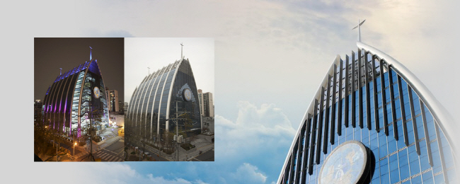
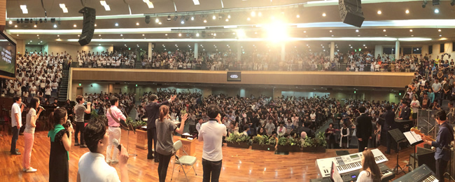

처음이어도 괜찮습니다. 오래 떠나 있었어도 괜찮습니다. 당신이 오는 것만으로 충분합니다.

처음 오시는 분도, 오래 떠나 계셨던 분도, 쉬어가고 싶으신 분도 — 청운교회의 문은 늘 열려 있습니다.
1967년부터 이 자리를 지켜온 교회입니다. 함께 예배드릴 수 있어 감사합니다.
범선을 닮은 예배당에서 매 주일함께 하나님을 찬양합니다
삶을 나누는 셀 공동체
지역사회와 함께하는 나눔
나이와 상황에 맞는 공동체가 준비되어 있습니다
그냥 오시면 됩니다. 나머지는 저희가 준비해 뒀습니다.